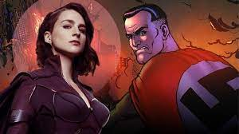
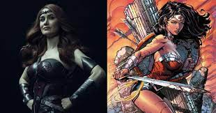
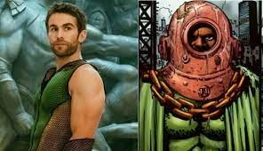
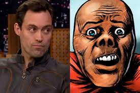

Os Sete ( todos, até os que sairam ou entraram posteriormente na equipe )
Stormfront ( Tempesta )

Tempesta nasce servindo de testes para alemãs nazistas, em que acaba sendo mandada para os Estados Unidos por ninguém mais ninguém menos que Hitler. Em terras americanas, o super não apenas ganhou popularidade como super herói - embora escondesse suas raízes nazistas - como participou de mais uma experiência, na qual seu DNA foi usado para criar o Homelander / Capitão Pátria e o Black Noir. Contudo, sua história de apresentação ao público contava que ele era um viking reincarnado.
Possui 5 poderes principais : eletroquinesis - capacidade de manipular eletricidade, voo, força sobre-humana, resistência e envelhecimento lento
Homelander ( Capitão Pátria )

Um líder implacável, justo, representante de todos os valores bons da nação, que veio do espaço e se tornou o grande protetor e herói dos americanos indefesos. Foi esta a imagem que a Vought-American criou para Homelander. Mas, na verdade, ele foi criado em laboratório e cresceu como uma mera experiência, num misto de ausência de uma família e poderes que fazem ele se sentir um deus.
Um completo psicopata, Homelander mantém a imagem de bom-moço para a imprensa, enquanto lidera à mão de ferro Os Sete, matando quem for preciso para proteger sua posição de poder, estuprando se quiser, entre outras barbaridades. Sente-se superior a todos, mas tem um grande complexo em relação a não ter tido uma mãe, mantendo uma relação doentia com Madelyn Stillwell, chegando a tomar o leite materno da ex- presidente da Vought-American mesmo depois de assassiná-la.
Homelander foi criado em laboratório, a partir do DNA de Stormfront/Tempesta. Nos quadrinhos, o Stormfront foi o primeiro super criado com o Composto V. O violento super foi fruto de experiências na Alemanha Nazista. Enquanto os conselheiros de Hitler sugeriram sua destruição, foi decidido enviar Stormfront aos Estados Unidos. Na América, o doutor Jonah Vogelbaum também foi a favor da destruição de Stormfront. Mas a Vough-American decidiu seguir um caminho diferente e usou o DNA do perigoso Super para criar Homelander e Black Noir.
O ódio que o líder do The Boys, Butcher, tem por Homelander vai além dos objetivos do grupo de tentar impedir que todos os supostos heróis sigam com a corrupção e o massacre disfarçado de boas ações. Butcher acredita que Homelander tenha sido o responsável pelo estupro de sua esposa, Becca (Becky, nos quadrinhos), e seu consequente desaparecimento.
Possui super força, velocidade e audição, voo, visão raio laser e raio x, além de grio super sônico e resistência sobre-humana.
Black Noir

O integrante d'Os Sete mais enigmático, Black Noir veste um uniforme preto que cobre por completo seu corpo, fazendo com que sua aparência seja um completo mistério. Para completar, o super praticamente não fala. Ainda assim, é um dos heróis mais temidos do grupo. Isso porque Black Noir é um assassino treinado, mestre em artes marciais, um habilidoso usuário de armas e tem poderes como força sobre-humana. A verdade por trás do uniforme do super é que Black Noir é um clone de Homelander, criado especificamente para matar o líder d'Os Sete, caso ele perdesse o controle e se tornasse uma ameaça. Com a demora para que recebesse a ordem para cumprir seu propósito, ele foi ficando cada vez mais psicótico.
Na tentativa de motivar uma ordem da Vought para que ele matasse Homelander, Black Noir passou a cometer diferentes crimes se passando pelo super, incluindo o estupro da esposa de Butcher (nos quadrinhos), assassinatos diversos e até canibalismo.
Em determinado ponto da história, nas HQs, Black Noir revela a Homelander e a Butcher a verdade sobre sua identidade e o que vinha fazendo para incriminar o líder do grupo. Homelander tenta matá-lo numa batalha tão violenta que o exército americano tenta intervir, usando tanques e e fogo pesado. Contudo, Black Noir leva a melhor e consegue matar Homelander. Ainda assim, ele acaba sendo morto por Butcher, que usa um pé-de-cabra para esmagar o cérebro do super.
Rainha Maeve

Logo que entrou n'Os Sete, Maeve era uma guerreira, feminista, humanitária, segunda integrante mais poderosa do grupo e um ídolo admirado por todas as meninas. Embora ela e a Vought mantenham essa imagem publicamente, nos bastidores Maeve abandonou muito de seus princípios para chegar aonde chegou. Para proteger aqueles que amava, acabou se distanciando de todos, incluindo de sua ex-namorada, Elena. Apesar de ter se tornado uma pessoa cínica e desiludida com a bondade humana, ainda se machuca com as barbaridades cometidas por Homelander, e chegou a ter um problema alcoólico. Ainda assim, é uma pessoa boa, não concorda com o que acontece dentro da Vought e tenta dar algum apoio a Starlight, quando a novata relembra a heroína que Queen Maeve já foi um dia.
Trem Bala / A-Train

Para a imprensa e para o público, A-Train é o jovem herói que uma dia integrou o grupo Teenage Kix até conquistar um posto n'Os Sete como novo velocista da equipe de supers. Na verdade, A-Train se mantém como o homem mais rápido do mundo às custas de seu vício em Composto V, que consome como uma droga. Contudo, ele perde o controle quando está drogado, o que fez com que ele matasse acidentalmente a namorada de Hughie, evento que dá início à história da série, como a motivação para o desejo de vingança do jovem, ao ver o descaso do herói e da Vough com o acidente. Outra consequência do consumo de Composto V é um grande risco de saúde, já tendo causado um ataque cardíaco, que quase lhe custou sua vida, e sua expulsão d'Os Sete.
Profundo

Desde criança, Profundo consegue se comunicar com animais aquáticos, ouvindo com frequência pedidos de socorro de peixes em aquários ou lagostas em supermercados. Embora tenha se tornado a imagem d'Os Sete nas mídias sociais, é um dos membros mais menosprezados do grupo, sendo sempre reduzido apenas a tarefas que envolvam água. Extremamente inseguro com as guelras que têm em sua barriga - na série - ele compensa isso com a sensação de poder que um estupro pode causar, motivo pelo qual chantageou Starlight para abusar dela Após o abuso chegar à mídia, Profundo é afastado d'OS Sete, e acaba se envolvendo com um movimento religioso na tentativa de se reconstruir e retornar ao grupo. Além de ser um dos poucos que sobreviveram de toda a equipe dos sete.
Translúcido

As experiências com Composto V em Translúcido lhe renderam uma pele formada por carbono metamaterial que permite tanto que ele fique invisível quanto que seja indestrutível. Embora ele use esses poderes para combater o crime como representante da Vought, também abusa disso para espionar mulheres no banheiro ou descobrir informações sigilosas. Também não dá a devida importância às mortes causadas pelos membros d'OS Sete, e chega a humilhar Hughie. Quando ele descobre que Hughie tentou colocar uma escuta na sede da Vough, tenta matá-lo, mas acaba preso por Butcher.
Ainda na primeira temporada, vemos Translúcido preso pelos The Boys em uma gaiola contida por eletricidade. Depois de pesquisar e desenvolver diferentes armas que talvez pudesse atingir o super, Frenchie percebe que a única forma de matá-lo é por dentro. Eles colocam uma bomba em seu ânus, forma como conseguem intimidá-lo a repassar informações sobre a Vought e A-Train. Quando Homelander tentar resgastar Translúcido, o The Boys consegue distrai-lo para outro local, e Hughie acaba explodindo o herói.
Annie / Starlight

O sonho de Annie sempre foi chegar a integrar Os Sete. Quando consegue finalmente realizar seu objetivo, frustra-se por completo com a corrupção, os crimes e outras barbaridades que vê dentro do grupo. Logo no dia de sua apresentação ao público, é chantageada por Profundo para fazer sexo oral nele. Além disso, aguenta outros abusos como ser obrigada a usar um novo uniforme que expõe mais seu corpo, de forma apelativa para o público. Durante a convenção religiosa à qual costumava ir quando mais jovem, ela acaba denunciando o assédio de Profundo. Aos poucos vai se impondo e ficando mais forte dentro da Vought. Conhece Hughie logo no início da série. Os dois passam a ter um relacionamento. No começo, ela não sabe que ele faz parte de um grupo que combate os Supers. Durante a segunda temporada da série, Annie já está, secretamente, ao lado de Hughie e dos membros do The Boys, motivada também pela descoberta de que todos os Supers foram fabricados com o Composto V.
Soldier Boy

A mini-série Herogasm apresentou Soldier Boy como o líder eleito do grupo Payback, equipe original de Stormfront. Inocente e ingênuo, nunca fala palavrões e sempre evita as depravações sexuais dos demais membros de seu grupo. Sua ingenuidade chega ao ponto de ele acreditar que fazer sexo com Homelander fazia parte de um teste para entrar para Os Sete. Extremamente patriota, tem o costume de listar os estados americanos enquanto luta. Contudo, é bem medroso. Conta ter lutado na Segunda Guerra Mundial, o que é uma mentira. Outro dos heróis que já usaram o manto de Soldier Boy esteve no conflito militar. Butcher abomina essa mentira, achando um insulto com aqueles que realmente estiveram na guerra. Na série, o personagem será interpretado pelo ator Jensen Ackles (Supernatural). Ainda não se sabe se o programa vai enfim apresentar outros grupos de heróis, como o Payback, ou se Soldier Boy deve integrar Os Sete na vaga de algum dos membros atuais.